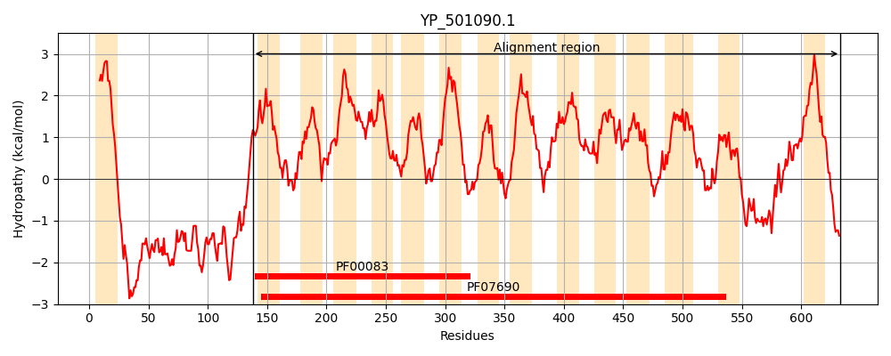
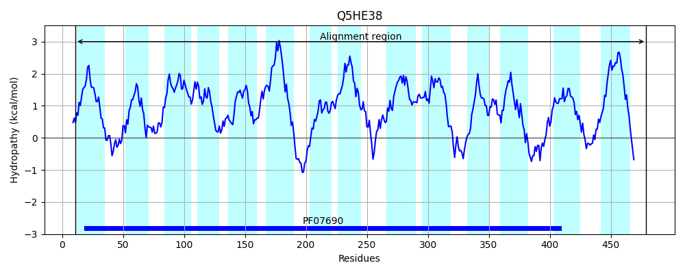
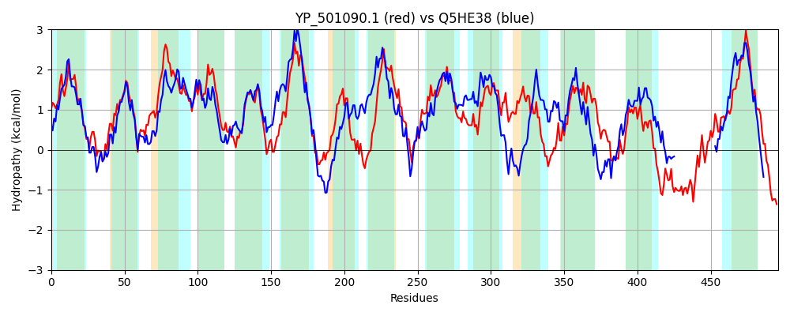

Hit Accession: Q5HE38
Hit TCID: 2.A.1.3.39
Hit Description: gnl|BL_ORD_ID|14369 gnl|TC-DB|Q5HE38|2.A.1.3.39 Drug resistance transporter, EmrB/QacA subfamily OS=Staphylococcus aureus (strain COL) GN=SACOL2157 PE=4 SV=1
Mach Len: 496
e:0.000000
Query TMS Count : 15
Hit TMS Count: 14
TMS-Overlap Score: 12.200000
Predicted Substrates:CHEBI:8984;sodium dodecyl sulfate, CHEBI:9731;trimethoprim, CHEBI:6477;linezolid, CHEBI:3603;chloramphenicol
BLAST Alignment:
Score: 913 , Bit scores: 356 bits, E-value: 1.6e-116, Alignment length: 496, Percentage identity: 38
Query: 138 RGKILAALLFGMFIAILNQTLLNVALPKINTEFNISASTGQWLMTGFMLVNGILIPITAYLFNKYSYRKLFLVALVLFTIGSLICAISMNFPIMMVGRVLQAIGAGVLMPLGSIVIITIYPPEKRGAAMGTMGIAMILAPAIGPTLSGYIVQNYHWNVMFYGMFIIGIIAILIGFVWFKLYQYTTNPKADIPGIIFSTIGFGALLYGFSEAGNKGWGSVEIETMFAIGIIFIILFVIRELRMKSPMLNLEVLKFPTFTLTTIINMVVMLSLYGGMILLPIYLQNLRGFSALDSGLLLLPGSLIMGLLGPFAGKLLDTIGLKPLAIFGIAVMTYATWELTKLNMDTPYMTIMGIYVLRSFGMAFIMMPMVTAAINALPGRLASHGNAFLNTMRQLAGSIGTAILVTVMTTQTTQHLSAFGEELDKTNPVVQDHMRELASQYGGQEGAMKVLLQFVNKLATVEGINDAFIVATIFSIIALILCLFLQSNKKAKATAQK 633
R I+A +L F+AILNQTLLN ALP I E NI+ ST QWL+TGFMLVNG++IP+TAYL ++ R L+L A+ F +GS++ A++ NF ++M+ RV+QA+GAGVLMPL + T++ E RG AMG G+ + APAIGPT++G I+ W V F + I I+A + G V Y K D +++STIGFG +LY FS AG+ G+ S + + ++ I LF+ R+ + + +LNL V K TF L TI +M++M+S+ G +L+P+Y+QN SAL SGL+++PG++I G++ F GK D G +PL G ++T T L L+ DT Y ++ +Y +R F ++ +MMP+ T IN+L SHG A +N R +AGS+GTA++VT+M+ LS L T + + + G++ +F + + A ++ LF++ K+ ++ +K
Sbjct: 11 RNFIVAVMLISAFVAILNQTLLNTALPSIMRELNINESTSQWLVTGFMLVNGVMIPLTAYLMDRIKTRPLYLAAMGTFLLGSIVAALAPNFGVLMLARVIQAMGAGVLMPLMQFTLFTLFSKEHRGFAMGLAGLVIQFAPAIGPTVTGLIIDQASWRVPFIIIVGIAILAFVFGLVSISSYNEVKYTKLDKRSVMYSTIGFGLMLYAFSSAGDLGFTSPIVIGALILSMVIIYLFIRRQFNITNALLNLRVFKNRTFALCTISSMIIMMSMVGPALLIPLYVQNSLSLSALLSGLVIMPGAIINGIMSVFTGKFYDKYGPRPLIYTGFTILTITTIMLCFLHTDTSYTYLIVVYAIRMFSVSLLMMPINTTGINSLRNEEISHGTAIMNFGRVMAGSLGTALMVTLMSFGAKIFLSTSPSHLTATE---------------------------IKQQSIAIGVDISFAFVAVLVMAAYVIALFIREPKEIESNRRK 479 | Protein Hydropathy Plots: |
|---|
|  |  |
Pairwise Alignment-Hydropathy Plot:
|
|---|
|  |